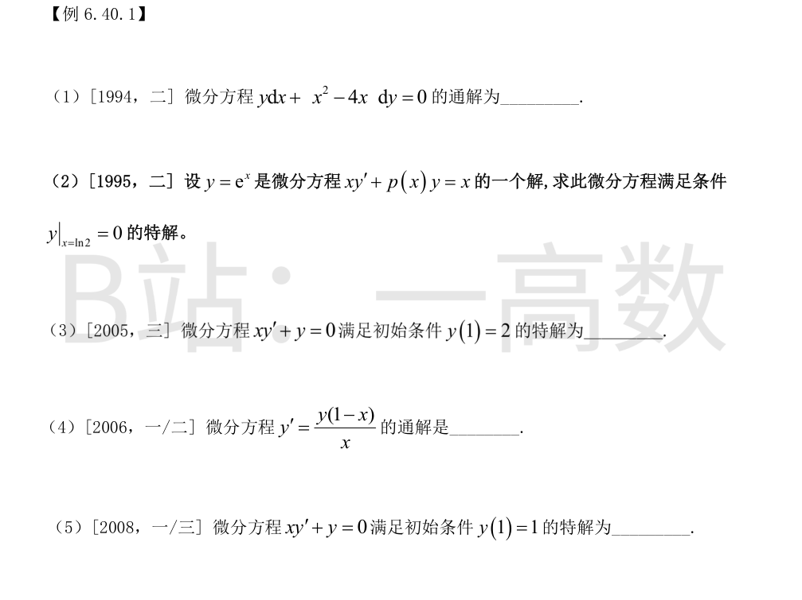
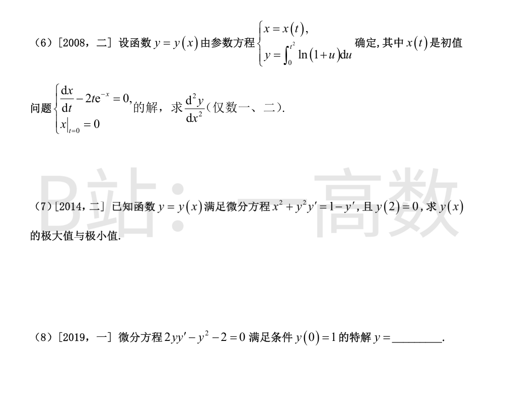
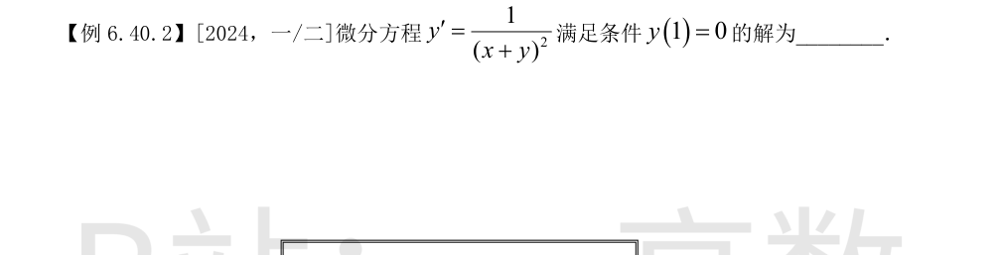
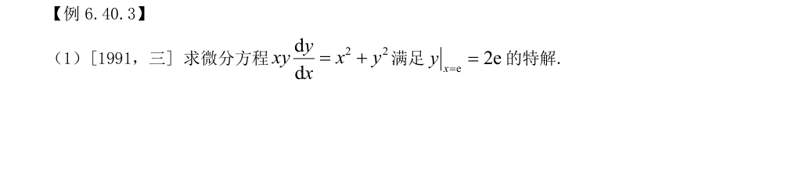
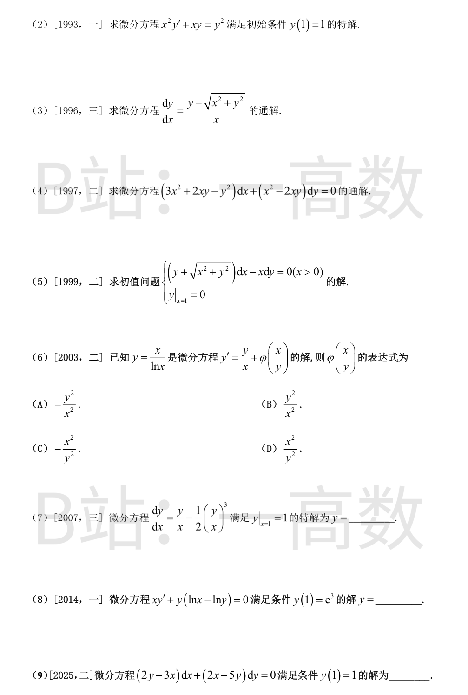
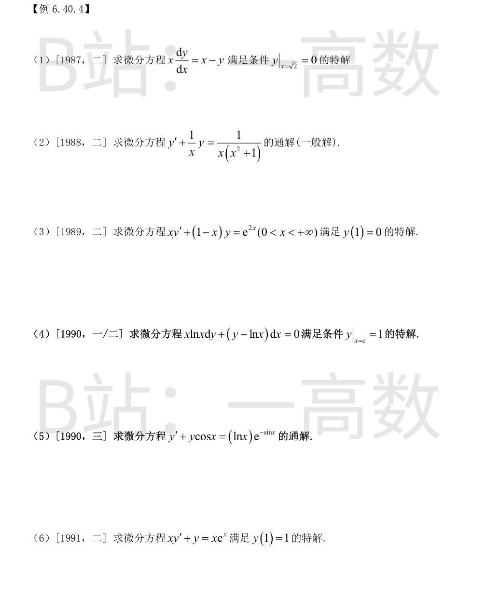
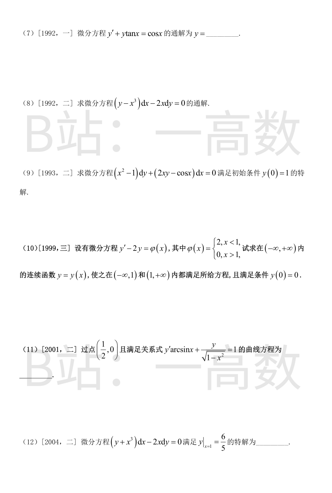
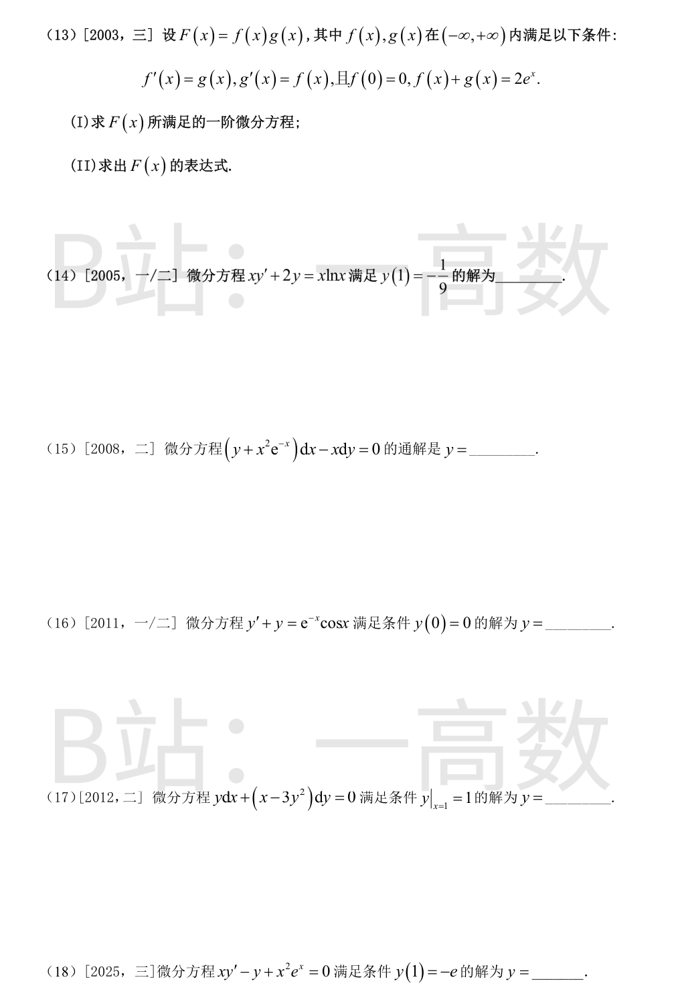
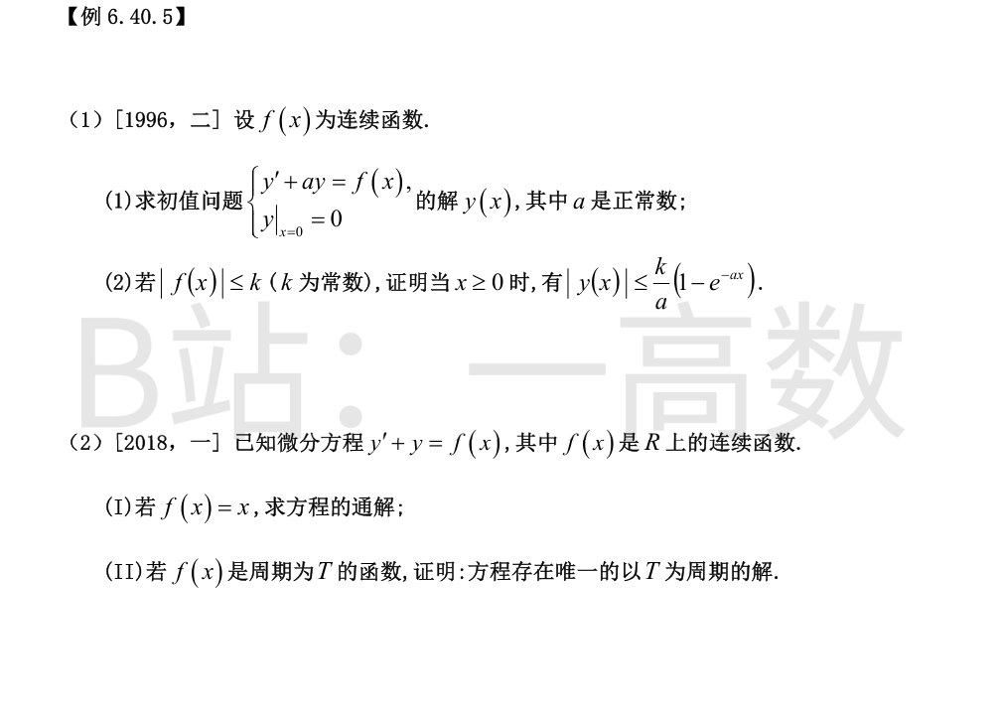
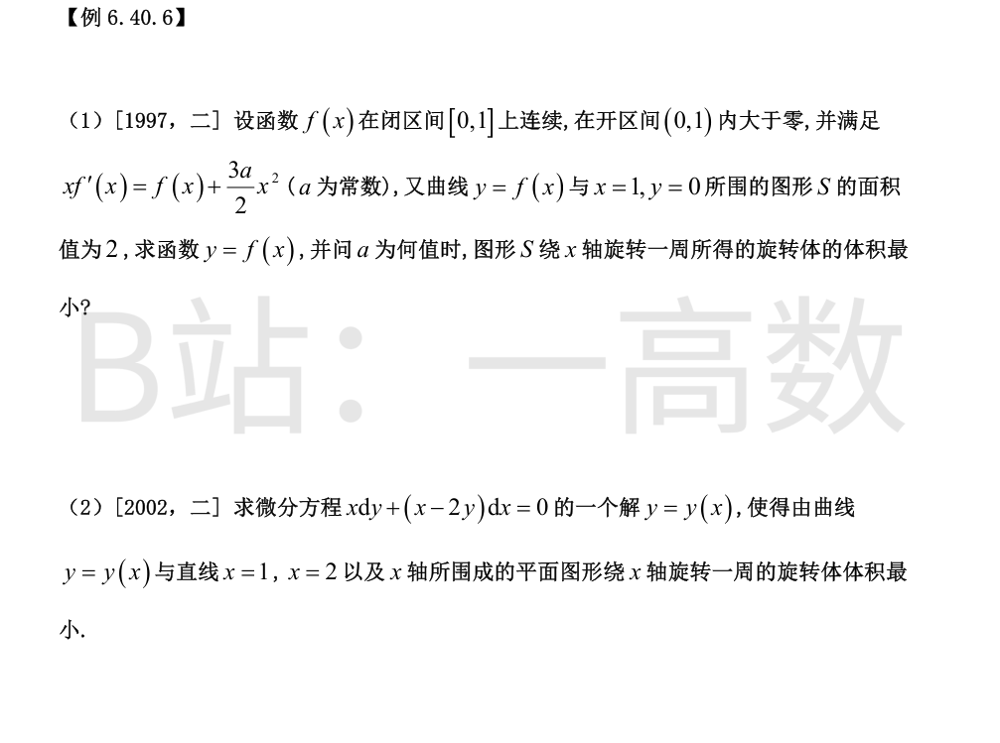

分离变量（$y\neq0,\ x\neq0,\ x\neq4$）：
$$\frac{dy}{y}=\frac{dx}{4x-x^2}.$$
部分分式：
$$\frac{1}{4x-x^2}=\frac{1}{x(4-x)}=\frac14\Big(\frac1x+\frac{1}{4-x}\Big).$$
积分：
$$\ln|y|=\frac14\big(\ln|x|-\ln|4-x|\big)+C_1 .$$
两边乘 4 并指数化：
$$y^4=C\,\frac{x}{4-x},\qquad\text{即}\ (4-x)y^4=Cx\ (C\ \text{为任意常数}).$$
$y=0$ 也是解，对应 $C=0$。验证：对 $y^4=\dfrac{Cx}{4-x}$ 求导，
$$4y^3y'=C\cdot\frac{4}{(4-x)^2}=\frac{4y^4}{x(4-x)}\ \Rightarrow\ y'=\frac{y}{4x-x^2},$$
与原方程（$dy/dx=-\dfrac{y}{x^2-4x}=\dfrac{y}{4x-x^2}$）一致。
以 $y=e^x$ 代入方程：$xe^x+p(x)e^x=x$，解得
$$p(x)=x\,(e^{-x}-1).$$
于是原方程（除以 $x$）为
$$y'+(e^{-x}-1)\,y=1 .$$
对应齐次方程 $y'=(1-e^{-x})y$：
$$\ln|y|=x+e^{-x}+C_1\ \Rightarrow\ \tilde y=C\,e^{\,x+e^{-x}}.$$
已知非齐次特解 $y_p=e^x$，故通解为
$$y=e^x+C\,e^{\,x+e^{-x}}.$$
由 $y|_{x=\ln 2}=0$：
$$0=2+C\,e^{\ln 2+\frac12}=2+2e^{1/2}C\ \Rightarrow\ C=-e^{-1/2}.$$
所求特解：
$$y=e^x-e^{\,x+e^{-x}-\frac12}.$$
验证：$y(\ln 2)=2-e^{\ln 2}=0$；且 $y'+(e^{-x}-1)y=1$ 直接代入成立。
$xy'+y=(xy)'=0$，故 $xy=C$。由 $y(1)=2$ 得 $C=2$，特解
$$y=\frac{2}{x}.$$
分离变量：
$$\frac{dy}{y}=\Big(\frac1x-1\Big)dx\ \Rightarrow\ \ln|y|=\ln|x|-x+C_1,$$
通解
$$y=C\,x\,e^{-x}\quad(C\ \text{为任意常数，含}\ y=0\ \text{解}).$$
$(xy)'=0\Rightarrow xy=C$；由 $y(1)=1$ 得 $C=1$，特解 $y=\dfrac1x$。
先解 $x(t)$：$\dfrac{dx}{dt}=2te^{-x}$，即 $e^x dx=2t\,dt$，积分得 $e^x=t^2+C$；由 $x|_{t=0}=0$ 得 $C=1$，故
$$x=\ln(1+t^2),\qquad \frac{dx}{dt}=\frac{2t}{1+t^2}.$$
又
$$\frac{dy}{dt}=2t\ln(1+t^2).$$
于是
$$\frac{dy}{dx}=\frac{2t\ln(1+t^2)}{2t/(1+t^2)}=(1+t^2)\ln(1+t^2),$$
$$\frac{d^2y}{dx^2}=\frac{\dfrac{d}{dt}\big[(1+t^2)\ln(1+t^2)\big]}{dx/dt}
=\frac{2t\ln(1+t^2)+2t}{2t/(1+t^2)}=(1+t^2)\big[1+\ln(1+t^2)\big].$$
整理：$y'(1+y^2)=1-x^2$，分离变量：
$$(1+y^2)\,dy=(1-x^2)\,dx\ \Rightarrow\ y+\frac{y^3}{3}=x-\frac{x^3}{3}+C .$$
由 $y(2)=0$：$0=2-\dfrac83+C\Rightarrow C=\dfrac23$，即
$$y^3+3y=-x^3+3x+2 .$$
令 $y'=0$ 得驻点 $x=\pm1$（此时 $y''(1+y^2)=-2x$，即 $y''=-\dfrac{2x}{1+y^2}$）。
$x=-1$：$y^3+3y=-(0)^2\cdot(-3)=0\Rightarrow y=0$（$y^3+3y$ 严格增，根唯一）；$y''=\dfrac{2}{1}>0$，故极小值 $y(-1)=0$。
$x=1$：$y^3+3y=-(2)^2\cdot(-1)=4$，即 $y^3+3y-4=(y-1)(y^2+y+4)=0$，唯一实根 $y=1$；$y''=-\dfrac{2}{2}=-1<0$，故极大值 $y(1)=1$。
$2yy'=y^2+2$。令 $u=y^2$，则 $u'=2yy'=u+2$，分离变量：
$$\frac{du}{u+2}=dx\ \Rightarrow\ \ln(u+2)=x+C_1\ \Rightarrow\ u+2=Ce^x .$$
由 $y(0)=1$ 得 $u(0)=1$：$1+2=C\Rightarrow C=3$，故
$$y^2=3e^x-2 .$$
由 $y(0)=1>0$ 及解的连续性取正枝：$y=\sqrt{3e^x-2}$（定义域 $x\ge\ln\frac23$）。
验证：$2yy'=\dfrac{d(y^2)}{dx}=3e^x=y^2+2$，即 $2yy'-y^2-2=0$，且 $y(0)=\sqrt{3-2}=1$。

令 $u=x+y$，则 $u'=1+y'=1+\dfrac{1}{u^2}=\dfrac{u^2+1}{u^2}$。视 $x$ 为 $u$ 的函数：
$$\frac{dx}{du}=\frac{u^2}{1+u^2}=1-\frac{1}{1+u^2},$$
积分得
$$x=u-\arctan u+C .$$
代回 $u=x+y$：
$$x=x+y-\arctan(x+y)+C\ \Rightarrow\ \arctan(x+y)-y=C_1 .$$
由 $y(1)=0$（$x=1,y=0$）：$\arctan 1=\dfrac{\pi}{4}$，故 $C_1=\dfrac{\pi}{4}$，即
$$\arctan(x+y)=y+\frac{\pi}{4}\ \Rightarrow\ x=\tan\Big(y+\frac{\pi}{4}\Big)-y .$$


$\dfrac{dy}{dx}=\dfrac{x^2+y^2}{xy}=\dfrac{x}{y}+\dfrac{y}{x}$，齐次方程。令 $u=\dfrac yx$，$y'=u+xu'$：
$$u+xu'=\frac1u+u\ \Rightarrow\ xu'=\frac1u\ \Rightarrow\ u\,du=\frac{dx}{x},$$
积分：$\dfrac{u^2}{2}=\ln|x|+C$，即
$$y^2=x^2\,(2\ln|x|+C_1).$$
代入 $x=e,\ y=2e$：$4e^2=e^2(2+C_1)\Rightarrow C_1=2$。故
$$y^2=2x^2(\ln x+1)\quad(x>0).$$
验证：$2yy'=4x(\ln x+1)+2x$，$xy\,y'=2x^2\ln x+3x^2=x^2+y^2$（代入 $y^2$ 表达式可核）。
$y'=\Big(\dfrac yx\Big)^2-\dfrac yx$，齐次。令 $u=y/x$：
$$u+xu'=u^2-u\ \Rightarrow\ \frac{du}{u^2-2u}=\frac{dx}{x}.$$
部分分式 $\dfrac{1}{u^2-2u}=\dfrac12\Big(\dfrac{1}{u-2}-\dfrac1u\Big)$，积分：
$$\frac12\ln\Big|\frac{u-2}{u}\Big|=\ln|x|+C_2\ \Rightarrow\ \frac{u-2}{u}=Cx^2,$$
即 $\dfrac{y-2x}{y}=Cx^2$。由 $y(1)=1$：$\dfrac{1-2}{1}=-1=C$。于是 $y-2x=-x^2y$，
$$y=\frac{2x}{1+x^2}.$$
验证：$y(1)=1$；$x^2y'+xy=\dfrac{4x^2}{(1+x^2)^2}=y^2$ 成立。
当 $x>0$：$\dfrac{dy}{dx}=\dfrac yx-\sqrt{1+\big(\dfrac yx\big)^2}$。令 $u=\dfrac yx$：
$$u+xu'=u-\sqrt{1+u^2}\ \Rightarrow\ \frac{du}{\sqrt{1+u^2}}=-\frac{dx}{x}.$$
积分：
$$\ln\big(u+\sqrt{1+u^2}\big)=-\ln|x|+C\ \Rightarrow\ x\Big(u+\sqrt{1+u^2}\Big)=C .$$
即
$$y+\sqrt{x^2+y^2}=C\qquad(C\ \text{为任意常数}).$$
验证：由通解 $y=C-\sqrt{x^2+y^2}$ 求导可还原原方程。
$M=3x^2+2xy-y^2,\ N=x^2-2xy$，且
$$\frac{\partial M}{\partial y}=2x-2y=\frac{\partial N}{\partial x},$$
为全微分方程。取
$$F=\int M\,dx=x^3+x^2y-xy^2+g(y),$$
$$\frac{\partial F}{\partial y}=x^2-2xy+g'(y)=x^2-2xy\ \Rightarrow\ g'(y)=0 .$$
故通解为
$$x^3+x^2y-xy^2=C.$$
（亦可按齐次方程令 $u=y/x$ 求解，结果一致。）
$\dfrac{dy}{dx}=\dfrac yx+\sqrt{1+\big(\dfrac yx\big)^2}$，齐次。令 $u=y/x$：
$$u+xu'=u+\sqrt{1+u^2}\ \Rightarrow\ \frac{du}{\sqrt{1+u^2}}=\frac{dx}{x},$$
积分：$\ln\big(u+\sqrt{1+u^2}\big)=\ln x+C$，即 $u+\sqrt{1+u^2}=C_1x$。
由 $x=1,\ u=0$ 得 $C_1=1$：$u+\sqrt{1+u^2}=x$。
移项平方：$1+u^2=x^2-2xu+u^2\Rightarrow 2xu=x^2-1\Rightarrow u=\dfrac{x^2-1}{2x}$。
故
$$y=xu=\frac{x^2-1}{2},\qquad y(1)=0\ \checkmark$$
$y=\dfrac{x}{\ln x}\Rightarrow y'=\dfrac{\ln x-1}{\ln^2 x}$，而 $\dfrac yx=\dfrac{1}{\ln x}$，故
$$y'=\frac{y}{x}-\frac{1}{\ln^2 x}=\frac yx-\Big(\frac yx\Big)^2 .$$
代入方程 $y'=\dfrac yx+\varphi\big(\dfrac xy\big)$：
$$\varphi\Big(\frac xy\Big)=-\Big(\frac yx\Big)^2=-\frac{1}{(x/y)^2}=-\frac{y^2}{x^2}.$$
故选 (A)。
令 $u=y/x$：$u+xu'=u-\dfrac{u^3}{2}$，即 $xu'=-\dfrac{u^3}{2}$，分离：
$$\frac{du}{u^3}=-\frac{dx}{2x}\ \Rightarrow\ -\frac{1}{2u^2}=-\frac12\ln x+C\ \Rightarrow\ \frac{1}{u^2}=\ln x+C_1 .$$
由 $x=1,\ u=1$：$C_1=1$。故 $u^2=\dfrac{1}{1+\ln x}$；由 $u(1)=1>0$ 取
$$u=\frac{1}{\sqrt{1+\ln x}}\ \Rightarrow\ y=\frac{x}{\sqrt{1+\ln x}}\quad(x>e^{-1}).$$
$xy'=y\ln\dfrac yx$。令 $u=y/x$，$y'=u+xu'$：
$$u+xu'=u\ln u\ \Rightarrow\ \frac{du}{u(\ln u-1)}=\frac{dx}{x}.$$
再令 $v=\ln u$，$\dfrac{dv}{v-1}=\dfrac{dx}{x}$，积分：$\ln|\ln u-1|=\ln|x|+C$，即
$$\ln u-1=C_1x .$$
由 $y(1)=e^3\Rightarrow u(1)=e^3$：$\ln e^3-1=2=C_1$。故 $\ln u=2x+1$，
$$y=x\,e^{2x+1}.$$
验证：$y'=e^{2x+1}(1+2x)$，$xy'+y(\ln x-\ln y)=xe^{2x+1}(1+2x)+xe^{2x+1}\ln e^{-(2x+1)}=0$。
$M=2y-3x,\ N=2x-5y$，$\dfrac{\partial M}{\partial y}=2=\dfrac{\partial N}{\partial x}$，恰当方程。
$$F=\int M\,dx=2xy-\frac{3x^2}{2}+g(y),\qquad \frac{\partial F}{\partial y}=2x+g'(y)=2x-5y\ \Rightarrow\ g=-\frac{5y^2}{2}.$$
故
$$2xy-\frac{3x^2}{2}-\frac{5y^2}{2}=C\ \Longleftrightarrow\ 4xy-3x^2-5y^2=C'.$$
代入 $y(1)=1$：$4-3-5=-4$，即
$$3x^2-4xy+5y^2=4.$$
验证：记 $F=3x^2-4xy+5y^2$，则 $dF=(6x-4y)dx+(10y-4x)dy=-2\,[(2y-3x)dx+(2x-5y)dy]$，与原方程仅差常数倍，故该隐函数确为满足条件的解。



$y'+\dfrac yx=1$，一阶线性，$\int\frac1x dx=\ln x$：
$$y=e^{-\ln x}\Big[\int 1\cdot x\,dx+C\Big]=\frac1x\Big(\frac{x^2}{2}+C\Big)=\frac x2+\frac Cx .$$
由 $x=\sqrt2,\ y=0$：$0=\dfrac{\sqrt2}{2}+\dfrac{C}{\sqrt2}\Rightarrow C=-1$。故
$$y=\frac x2-\frac1x,\qquad y(\sqrt2)=0\ \checkmark$$
积分因子 $\mu=e^{\int dx/x}=x$：
$$(xy)'=x\Big(y'+\frac yx\Big)=\frac{1}{x^2+1}.$$
积分：$xy=\arctan x+C$，通解
$$y=\frac{\arctan x+C}{x}.$$
$y'+\big(\dfrac1x-1\big)y=\dfrac{e^{2x}}{x}$，积分因子
$$\mu=e^{\int(1/x-1)dx}=e^{\ln x-x}=xe^{-x}.$$
$$(xe^{-x}y)'=xe^{-x}\cdot\frac{e^{2x}}{x}=e^x\ \Rightarrow\ xe^{-x}y=e^x+C.$$
故 $y=\dfrac{e^{2x}+Ce^x}{x}$。由 $y(1)=0$：$e^2+Ce=0\Rightarrow C=-e$。故
$$y=\frac{e^x(e^x-e)}{x}.$$
$x>0,\ x\neq1$：$y'+\dfrac{1}{x\ln x}y=\dfrac1x$。积分因子 $\mu=e^{\int \frac{dx}{x\ln x}}=e^{\ln(\ln x)}=\ln x$：
$$(y\ln x)'=\frac{\ln x}{x}\ \Rightarrow\ y\ln x=\frac{\ln^2 x}{2}+C .$$
由 $x=e,\ y=1$：$1=\dfrac12+C\Rightarrow C=\dfrac12$。故
$$y=\frac{\ln^2x+1}{2\ln x}=\frac12\Big(\ln x+\frac{1}{\ln x}\Big).$$
积分因子 $\mu=e^{\int\cos x\,dx}=e^{\sin x}$：
$$(ye^{\sin x})'=e^{\sin x}(y'+y\cos x)=\ln x,$$
$$ye^{\sin x}=\int\ln x\,dx=x\ln x-x+C,$$
通解
$$y=e^{-\sin x}(x\ln x-x+C).$$
$(xy)'=xe^x$，积分：
$$xy=\int xe^x dx=(x-1)e^x+C .$$
由 $y(1)=1$：$1=0+C\Rightarrow C=1$。故
$$y=\frac{(x-1)e^x+1}{x}.$$
积分因子 $\mu=e^{\int\tan x dx}=e^{-\ln\cos x}=\sec x$：
$$\Big(\frac{y}{\cos x}\Big)'=\cos x\cdot\sec x=1\ \Rightarrow\ \frac{y}{\cos x}=x+C,$$
通解
$$y=(x+C)\cos x.$$
$\dfrac{dy}{dx}-\dfrac{1}{2x}y=-\dfrac{x^2}{2}$，一阶线性。积分因子 $\mu=e^{-\int\frac{dx}{2x}}=x^{-1/2}$（$x>0$）：
$$\big(yx^{-1/2}\big)'=-\frac{x^2}{2}\cdot x^{-1/2}=-\frac12x^{3/2},$$
$$yx^{-1/2}=-\frac15x^{5/2}+C\ \Rightarrow\ y=C\sqrt{x}-\frac{x^3}{5}.$$
（$x<0$ 时同式给出，$C\sqrt x$ 以 $\sqrt{|x|}$ 理解亦可，通解结构不变。）
视 $y$ 为未知函数：
$$y'+\frac{2x}{x^2-1}y=\frac{\cos x}{x^2-1}.$$
注意到 $\big[(x^2-1)y\big]'=(x^2-1)y'+2xy=\cos x$，直接积分：
$$(x^2-1)y=\sin x+C .$$
由 $y(0)=1$：$-1=0+C\Rightarrow C=-1$。故
$$y=\frac{\sin x-1}{x^2-1}=\frac{1-\sin x}{1-x^2}.$$
$x<1$：$y'-2y=2$，齐次通解 $C_1e^{2x}$，特解 $y_p=-1$，故 $y=C_1e^{2x}-1$。
由 $y(0)=0$：$C_1=1$，得 $y=e^{2x}-1$。
$x>1$：$y'-2y=0$，$y=C_2e^{2x}$。
要求 $y$ 在 $x=1$ 处连续：
$$\lim_{x\to1^-}y=e^2-1=\lim_{x\to1^+}C_2e^{2x}=C_2e^2\ \Rightarrow\ C_2=1-e^{-2}.$$
故
$$y(x)=\begin{cases}e^{2x}-1, & x\le 1,\\[2pt] (1-e^{-2})\,e^{2x}, & x>1.\end{cases}$$
该函数在 $(-\infty,+\infty)$ 连续，且在各区间内满足方程，$y(0)=0$。
左端恰为 $(y\arcsin x)'$：
$$y'\arcsin x+\frac{y}{\sqrt{1-x^2}}=(y\arcsin x)'=1 .$$
积分：$y\arcsin x=x+C$。由曲线过 $\big(\dfrac12,0\big)$：
$$0\cdot\frac{\pi}{6}=\frac12+C\ \Rightarrow\ C=-\frac12 .$$
曲线方程：
$$y\arcsin x=x-\frac12.$$
与 1992 年题同型：$y'-\dfrac{1}{2x}y=-\dfrac{x^2}{2}$，通解
$$y=C\sqrt{x}-\frac{x^3}{5}.$$
由 $y(1)=\dfrac65$：$C-\dfrac15=\dfrac65\Rightarrow C=\dfrac75$。故
$$y=\frac75\sqrt{x}-\frac{x^3}{5}=\frac{7\sqrt{x}-x^3}{5}.$$
(I) $F'=f'g+fg'=g^2+f^2=(f+g)^2-2fg=4e^{2x}-2F$，即
$$F'+2F=4e^{2x}.$$
(II) 一阶线性方程，两边乘 $e^{2x}$：
$$(Fe^{2x})'=4e^{4x}\ \Rightarrow\ Fe^{2x}=e^{4x}+C\ \Rightarrow\ F=e^{2x}+Ce^{-2x}.$$
初值：$f(0)=0\Rightarrow F(0)=f(0)g(0)=0$，故 $0=1+C\Rightarrow C=-1$。
$$F(x)=e^{2x}-e^{-2x}.$$
验证：$F'+2F=(2e^{2x}+2e^{-2x})+(2e^{2x}-2e^{-2x})=4e^{2x}$。
$y'+\dfrac2x y=\ln x$，积分因子 $\mu=x^2$：
$$(x^2y)'=x^2\ln x,\qquad \int x^2\ln x\,dx=\frac{x^3}{3}\ln x-\frac{x^3}{9}+C,$$
$$x^2y=\frac{x^3}{3}\ln x-\frac{x^3}{9}+C .$$
由 $y(1)=-\dfrac19$：$-\dfrac19=-\dfrac19+C\Rightarrow C=0$。故
$$y=\frac{x}{3}\ln x-\frac{x}{9}=\frac{x}{9}(3\ln x-1).$$
$xdy=y\,dx+x^2e^{-x}dx$，即 $y'-\dfrac yx=xe^{-x}$。积分因子 $\mu=e^{-\int dx/x}=\dfrac1x$：
$$\Big(\frac yx\Big)'=e^{-x}\ \Rightarrow\ \frac yx=-e^{-x}+C,$$
通解
$$y=x\,(C-e^{-x}).$$
验证：$xy'-y=x(C-e^{-x}+xe^{-x})-x(C-e^{-x})=x^2e^{-x}$。
积分因子 $\mu=e^x$：
$$(ye^x)'=\cos x\ \Rightarrow\ ye^x=\sin x+C .$$
由 $y(0)=0$：$0=0+C\Rightarrow C=0$。故
$$y=e^{-x}\sin x.$$
把 $x$ 看作 $y$ 的函数：$\dfrac{dx}{dy}+\dfrac1y x=3y$，一阶线性，积分因子 $\mu=e^{\int dy/y}=y$：
$$(xy)'=3y^2\ \Rightarrow\ xy=y^3+C .$$
由 $y(1)=1$：$1=1+C\Rightarrow C=0$，故 $x=y^2$，即
$$y=\sqrt{x}\quad(\text{由}\ y(1)=1>0\ \text{取正枝}).$$
$y'-\dfrac yx=-xe^x$，积分因子 $\mu=e^{-\int dx/x}=\dfrac1x$：
$$\Big(\frac yx\Big)'=-e^x\ \Rightarrow\ \frac yx=-e^x+C .$$
由 $y(1)=-e$：$-e=-e+C\Rightarrow C=0$。故
$$y=-xe^x.$$
验证：$xy'-y+x^2e^x=x(-e^x-xe^x)+xe^x+x^2e^x=0$。

(1) 积分因子 $\mu=e^{ax}$：
$$(ye^{ax})'=e^{ax}f(x).$$
在 $[0,x]$ 上积分并用 $y(0)=0$：
$$y(x)e^{ax}-0=\int_0^x e^{at}f(t)\,dt\ \Rightarrow\ y(x)=e^{-ax}\int_0^x e^{at}f(t)\,dt .$$
(2) 当 $x\ge0$ 时 $e^{ax}>0$，估计：
$$|y(x)|=e^{-ax}\Big|\int_0^x e^{at}f(t)dt\Big|\le e^{-ax}\int_0^x e^{at}|f(t)|dt\le k\,e^{-ax}\int_0^x e^{at}dt$$
$$=k\,e^{-ax}\cdot\frac{e^{ax}-1}{a}=\frac ka\big(1-e^{-ax}\big).\qquad\blacksquare$$
(I) $y'+y=x$，积分因子 $e^x$：$(ye^x)'=xe^x$，
$$ye^x=\int xe^x dx=(x-1)e^x+C\ \Rightarrow\ y=x-1+Ce^{-x}.$$
(II) 对一般连续的 $f$，通解为
$$y(x)=e^{-x}\Big[\int_0^x e^{t}f(t)\,dt+C\Big].$$
（当 $f=x$ 时即为 (I)。）
**存在性**：令 $y(T)=y(0)$ 以确定 $C$。$y(0)=C$；$y(T)=e^{-T}\big[\int_0^T e^tf(t)dt+C\big]$。解
$$e^{-T}\Big[\int_0^T e^tf(t)dt+C\Big]=C\ \Longrightarrow\ C=\frac{1}{e^{T}-1}\int_0^T e^{t}f(t)\,dt\ (\text{唯一}).
$$
取该 $C$ 得解 $y(x)$。令 $g(x)=y(x+T)$，则因 $f(x+T)=f(x)$：
$$g'+g=f(x+T)=f(x),\qquad g(0)=y(T)=y(0).$$
即 $g$ 与 $y$ 满足同一一阶线性方程和同一初值，由初值问题解的唯一性得 $g(x)=y(x)\ (\forall x)$，即 $y(x+T)=y(x)$，$y$ 是以 $T$ 为周期的解。
**唯一性**：设 $y_1,y_2$ 都是以 $T$ 为周期的解，则 $w=y_1-y_2$ 满足 $w'+w=0$，故 $w=Ce^{-x}$。周期性要求 $Ce^{-x}=Ce^{-(x+T)}$ 对一切 $x$ 成立，而 $e^{-T}\neq1$，故 $C=0$，$w\equiv0$，即周期解唯一。$\blacksquare$
故唯一周期解为
$$y(x)=e^{-x}\left[\int_0^x e^{t}f(t)\,dt+\frac{1}{e^{T}-1}\int_0^{T}e^{t}f(t)\,dt\right].$$

**求 f**：$f'-\dfrac1x f=\dfrac{3a}{2}x$，积分因子 $\mu=e^{-\int dx/x}=\dfrac1x$：
$$\Big(\frac fx\Big)'=\frac{3a}{2}\ \Rightarrow\ f(x)=\frac{3a}{2}x^2+Cx .$$
面积条件：$\displaystyle\int_0^1 f\,dx=\frac{3a}{2}\cdot\frac13+\frac C2=\frac a2+\frac C2=2\ \Rightarrow\ C=4-a$，故
$$f(x)=\frac{3a}{2}x^2+(4-a)x .$$
**旋转体体积**：
$$V(a)=\pi\int_0^1 f^2\,dx=\pi\int_0^1\Big[\frac{9a^2}{4}x^4+3a(4-a)x^3+(4-a)^2x^2\Big]dx$$
$$=\pi\Big[\frac{9a^2}{20}+\frac{3a(4-a)}{4}+\frac{(4-a)^2}{3}\Big]=\pi\Big(\frac{a^2}{30}+\frac a3+\frac{16}{3}\Big).$$
令 $V'(a)=\pi\big(\dfrac{a}{15}+\dfrac13\big)=0$ 得唯一驻点 $a=-5$；$V''(a)=\dfrac{\pi}{30}>0$，故 $a=-5$ 时 $V$ 最小，
$$V_{\min}=V(-5)=\pi\Big(\frac{5}{6}-\frac53+\frac{16}{3}\Big)=\frac{9\pi}{2}.$$
此时 $f(x)=x(9-\frac{15}{2}x)$ 在 $(0,1)$ 内大于零，与题设相容。
$x\dfrac{dy}{dx}=2y-x$，即 $y'-\dfrac2x y=-1$，积分因子 $\mu=e^{-\int 2dx/x}=x^{-2}$：
$$\big(yx^{-2}\big)'=-x^{-2}\ \Rightarrow\ \frac{y}{x^2}=\frac1x+C\ \Rightarrow\ y=x+Cx^2 .$$
旋转体体积：
$$V(C)=\pi\int_1^2 (x+Cx^2)^2\,dx=\pi\Big[\frac{x^3}{3}+2C\frac{x^4}{4}+C^2\frac{x^5}{5}\Big]_1^2
=\pi\Big(\frac{7}{3}+\frac{15}{2}C+\frac{31}{5}C^2\Big).$$
$$\frac{dV}{dC}=\pi\Big(\frac{15}{2}+\frac{62}{5}C\Big)=0\ \Rightarrow\ C=-\frac{75}{124},$$
且 $\dfrac{d^2V}{dC^2}=\dfrac{62\pi}{5}>0$，故该驻点为最小值点。所求解
$$y=x-\frac{75}{124}x^2 .$$